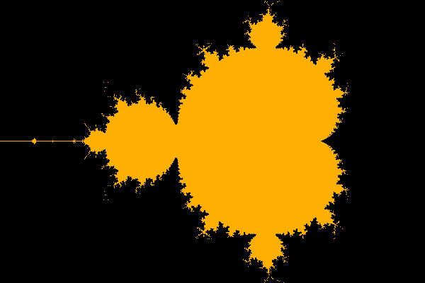

Extra#
Mandelbrot#

Tijdens dit practicum ga je een programma schrijven om de punten in en rond de mandelbrotverzameling weer te geven en te verkennen. Hierbij ga je:
Lussen en geneste lussen te gebruiken om complexe problemen op te lossen (vrij letterlijk!)
Een programma te ontwikkelen door middel van een incrementeel ontwerp, dat wil zeggen, je begint met een simpele taak en voegt steeds meer complexiteit toe
Een idee te krijgen van wiskunde en andere vakgebieden die fractaal modelleren toepassen
Inleiding op for-lussen#
Omdat je afbeeldingen gaat maken in dit practicum heb je wat extra code nodig om mee te beginnen; download wk8ex1.zip en pak het uit.
Om wat inzicht in lussen te krijgen, schrijf je eerst twee korte functies in wk8ex1.py:
De functie mult#
Schrijf een functie genaamd mult(c, n) die het product c keer n teruggeeft, maar zonder gebruik te maken van vermenigvuldigen. In plaats daarvan moet de functie een waarde (genaamd result) eerst op 0 zetten en daarna herhaaldelijk de waarde van c optellen bij result. Ze moet een for-lus gebruiken om te zorgen dat c het goede aantal keer wordt opgeteld. Nadat de lus klaar is, moet de functie het resultaat teruggeven.
De waarde van n is een positieve integer. Om je te helpen is hier een deel van de functie dat de waarde van result op 0 zet en de lus bevat:
def mult(c, n):
"""Mult uses only a loop and addition
to multiply c by the positive integer n
"""
result = 0
for i in range(n):
... # pas de waarde van result aan in deze lus
assert mult(3, 5) == 15
Hier zijn een paar testgevallen:
In [1]: mult(6, 7)
Out[1]: 42
In [2]: mult(1.5, 28)
Out[2]: 42.0
De functie update#
De volgende functie bevat de basisstap van de mandelbrotverzameling, namelijk z = z ** 2 + c voor een gegeven constante c.
Schrijf hiervoor een functie genaamd update(c, n) waar je een nieuwe waarde z op 0 laat beginnen en dan herhaaldelijk de waarde van z bijwerkt met behulp van de toekenning z = z ** 2 + c; laat dit n keer herhaald worden. Aan het eind moet de functie de laatste waarde van z teruggeven. De waarde van n is een positieve integer. Hieronder zie je de signature en de docstring:
def update(c, n):
"""Update starts with z = 0 and runs z = z**2 + c
for a total of n times. It returns the final z.
"""
Hier zijn een paar testgevallen:
In [1]: update(1, 3)
Out[1]: 5
In [2]: update(-1, 3)
Out[2]: -1
In [3]: update(1, 10)
Out[3]: 3791862310265926082868235028027893277370233152247388584761734150717768254410341175325352026
In [4]: update(-1, 10)
Out[4]: 0
Je gaat de ideeën achter deze functies (door middel van een variant van de functie update) hierna gebruiken
bij het bouwen van de mandelbrotverzameling.
Inleiding op de mandelbrotverzameling#
What’s so special about the Mandelbrot Set? geeft een goede, eerste inleiding in mandelbrotverzameling.
De mandelbrotverzameling is een verzameling punten op het complexe vlak die een interessante eigenschap delen die het makkelijkst is uit te leggen aan de hand van het volgende proces:
Kies een complex getal c.
Met deze c in het achterhoofd, start met z0 = 0.
Herhaal dan de volgende berekening:
zn+1 = zn2 + c
Complexe getallen
Je weet misschien dat het met normale getallen niet mogelijk is om de wortel van een negatief getal te nemen. Dit is voor wiskundigen een onwenselijke situatie, dus hebben ze een stelsel getallen bedacht waarbij dit wel kan. We noemen deze getallen “complexe getallen”. Waar je de normale getallen op een getallenlijn kan zetten, kan je de complexe getallen op een getallenvlak zetten, met een x- en een y-as. Elk complex getal kan je dus aangeven als een combinatie van een x- en een y-coördinaat. De x-waarde noemen we reëel en de y-waarde imaginair, en je schrijft dit als c = x + iy; i is de eenheid van imaginaire getallen, en is het antwoord op de vraag wat de wortel van -1 is.
Je kan je afvragen of dit nog nut buiten de wiskunde heeft; en het antwoord hierop is ja: het blijkt dat bij de berekeneningen over sommige natuurkundige processen je tijdens de berekening imaginaire getallen krijgt, maar als je dat dan allemaal netjes doorrekent, je toch weer op “echte†getallen uitkomt, die bovendien blijken te kloppen met wat we in de werkelijkheid zien.
De mandelbrotverzameling is de verzameling van alle complexe getallen c waarvoor geldt dat dit proces niet divergeert naar oneindigheid naar mate n groter wordt. In andere woorden, voor een gegeven c, als zn divergeert naar oneindigheid (dat wil zeggen, als je zn onbeperkt groot kan maken door n steeds groter te kiezen), dan hoort c niet in de verzameling; anders wel.
Je zou kunnen denken dat dit voor alle waardes van c zo is, maar dat blijkt niet zo te zijn: in sommige gevallen blijft de waarde bijvoorbeeld rond een bepaald punt cirkelen, of komt het getal juist steeds dichter bij 0.
Er zijn andere, equivalente definities van de mandelbrotverzameling. De mandelbrotverzameling bestaat bij voorbeeld precies uit die punten in het complexe vlak waarvoor de bijbehorende Juliaverzameling verbonden is. Toegegeven, dit zou vereisen dat we definiëren wat Juliaverzamelingen zijn, wat we hier niet zullen doen…
De mandelbrotverzameling is een fractal, wat betekent dat zijn grens zo complex is dat deze niet goed benaderd kan worden door ééndimensionale lijnstukken, ongeacht hoe ver je inzoomt. Er zijn veel beschikbare referenties.
De functie in_mset#
De volgende taak is om een functie genaamd in_mset(c, n) te schrijven die als argumenten een complex getal c en een integer n heeft.
Deze functie geeft een boolean terug:
Trueals het complexe getalconderdeel is van de mandelbrotverzameling enFalseals dat niet zo is.
Eerst introduceren we de ingebouwde ondersteuning voor complexe getallen in Python.
Python en complexe getallen#
In Python wordt een complex getal gerepresenteerd door middel van zijn reële deel x en zijn imaginaire deel y. De wiskundige notatie hiervoor zou x + yi zijn, maar in Python wordt de imaginaire eenheid weergegeven als 1.0j of 1j, zodat
c = x + y*1j
aan de variabele c het complexe getal met reeël deel x en imaginair deel y zou toekennen.
Helaas werkt x + yj niet, omdat Python dan denkt dat je een variabele met de naam yj probeert te gebruiken.
Ook de waarde 1 + j is geen complex getal: Python gaat ervan uit dat je een variabele j bedoelt als er geen getal meteen voor staat. Gebruik in plaats hiervan 1 + 1j.
Je hoef zelf verder niet te weten wat bijvoorbeeld de rekenregels voor vermenigvuldigen, optellen en machtsverheffen zijn met complexe getallen, Python zorgt er wel voor dat ze goed gebruikt worden!
i of j?
Wiskundigen gebruiken i; elektrotechnici gebruiken j omdat in de elektrotechniek i gebruikt wordt voor elektrische stroom. Python gebruikt deze laatste conventie, wat een bron van oneidinge verwarring kan zijn!
Probeer zelf even te oefenen met complexe getallen, bijvoorbeeld op de Python-prompt:
In [1]: c = 3 + 4j
In [2]: c
Out[2]: (3+4j)
In [3]: abs(c)
Out[3]: 5.0
In [4]: c**2
Out[4]: (-7+24j)
Python gebruikt zonder problemen de machtsverheffingsoperator (**) en andere operatoren op complexe getallen. Merk echter op dat je complexe getallen niet zonder meer kan vergelijken; het zijn 2D-punten, dus er bestaat niet zoiets als “groter dan”! Je kan dus niet c > 2 schrijven voor een complexe c (dit geeft een TypeError).
Je kan echter wel de magnitude, of lengte (tussen de oorsprong van het complexe vlak en het punt c), vergelijken: abs(c) > 2. We kunnen blijkbaar de ingebouwde functie abs gebruiken om de magnitude van een complex getal te bepalen.
Absolute waarde
Eerder hebben we abs gebruikt om te zorgen dat een getal altijd positief is: abs(-5) wordt 5, maar abs(5) is ook 5. Dit is consistent met deze nieuwe definitie: immers, de lengte op de getallen lijn tussen 0 en 5 is 5, maar de lengte tussen 0 en -5 is dat ook!
in_mset ontwerpen#
Om te bepalen of een getal c wel of geen onderdeel van de mandelbrotverzameling is, moet je
Beginnen met z0 = 0 + 0j en dan
de berekening zn+1 = zn2 + c blijven herhalen
om te zien of de reeks z0, z1, z2, enz. begrensd blijft.
Anders gezegd, we moeten weten of de magnitude van deze waardes zk oneindig groot worden.
Echt bepalen of deze reeks oneindig groot wordt is niet mogelijk. Om een redelijke gok te maken, moeten we twee keuzes maken:
Het aantal keer dat we bereid zijn zn+1 = zn2 + c te berekenen
Een waarde die we als “oneindig†beschouwen
We gaan de berekening n keer uitvoeren. De n is het tweede argument van de functie in_mset(c, n). Met deze waarde kan je experimenteren, maar 25 is een goed startpunt.
De waarde voor oneindig kan verrassend laag zijn! Het is bewezen dat als de absolute waarde van een complex getal z ooit groter dan 2 wordt tijdens de herhaalde berekening, we met zekerheid kunnen zeggen dat de reeks naar oneindig divergeert.
Er is geen gelijksoortige regel die ons vertelt dat de reeks met zekerheid niet divergeert, maar het is heel waarschijnlijk dat ze begrendsd is als abs(z) niet groter dan 2 wordt na een redelijk aantal iteraties, en n is dat “redelijke†nummer, beginnend bij 25.
in_mset schrijven#
Je kan het beste je functie update kopiëren en de naam veranderen in in_mset. Roep de functie update niet direct aan in in_mset, en laat de oude functie update in je bestand staan!
Om je op weg te helpen is hier de signature en een docstring voor in_mset:
def in_mset(c, n):
"""in_mset accepts
c for the update step of z = z**2+c
n, the maximum number of times to run that step
Then, it returns
False as soon as abs(z) gets larger than 2
True if abs(z) never gets larger than 2 (for n iterations)
"""
De functie in_mset moet False teruggeven als de reeks zn+1 = zn2 + c ooit een waarde z opgeeft waarvan de magnitude groter is dan 2. Anders geeft de functie True terug.
Merk op dat je geen verschillende variabelen nodig hebt voor z0, z1, z2, en zo verder. Je gebruikt in plaats daarvan een enkele variabele z. Je kan z bijwerken in een lus, net als in update.
True of False?
Zorg ervoor dat je return False ergens in je lus hebt staan. Je weet echter pas zeker dat het antword True is nadat de lus al haar iteraties heeft uitgevoerd, dus dan kan je pas return True doen!
Controleer de functie in_mset aan de hand van de volgende voorbeelden:
In [1]: c = 0 + 0j # deze is onderdeel van de verzameling
In [2]: in_mset(c, 25)
Out[2]: True
In [3]: c = 3 + 4j # deze is GEEN onderdeel van de verzameling
# WAARSCHUWING: deze kan Python laten hangen of crashen
# BEHALVE als je functie False terug geeft *meteen wanneer* de magnitude groter dan 2 is
# dat betekent dat je False moet teruggeven _in_ de lus (in de if of else, wat van toepassing is)!
In [4]: in_mset(c, 25)
False
In [5]: c = 0.3 + -0.5j # deze is ook onderdeel van de verzameling
In [6]: in_mset(c, 25)
Out[6]: True
In [7]: c = -0.7 + 0.3j # deze is GEEN onderdeel van de verzameling
In [8]: in_mset(c, 25)
Out[8]: False
In [9]: c = 0.42 + 0.2j
In [10]: in_mset(c, 25) # deze _lijkt_ onderdeel van de verzameling te zijn
Out[10]: True
In [11]: in_mset(c, 50) # maar bij 50 pogingen blijkt dat niet zo te zijn!
Out[11]: False
Krijg je teveel Trues?
Als dat zo is, kan het zijn dat je abs(z) > 2 pas controleert nadat de for-lus klaar is. Zorg dat je in de lus controleert!
Er is een subtiele reden dat je in de lus moet controleren:
Veel waardes worden zo snel zo groot dat ze de grenzen van floating-point getallen in Python overschrijden. Als dat gebeurt, dan werken de groter-dan- en kleiner-dan-vergelijkingen niet meer, en de test zal falen. De oplossing is om in de lus te controleren of de magnitude van z ooit groter wordt dan 2, en in dat geval meteen False terug te geven.
Afbeeldingen maken met Python#
Een begin maken#
Probeer om te beginnen deze code:
from png import * # Je hebt deze regel misschien al bovenaan je bestand...
def we_want_this_pixel(col, row):
"""This function returns True if we want to show
the pixel at col, row and False otherwise.
"""
if col % 10 == 0 and row % 10 == 0:
return True
else:
return False
def test():
"""This function demonstrates how
to create and save a PNG image.
"""
width = 300
height = 200
image = PNGImage(width, height)
# maak een lus om wat pixels te tekenen
for col in range(width):
for row in range(height):
if we_want_this_pixel(col, row):
image.plot_point(col, row)
# we hebben door alle pixels gelust; nu schrijven we het bestand
image.save_file()
Sla deze code op en voer het uit door test(), met haakjes, in te typen in de Pythonshell.
ModuleNotFoundError
Als je een ModuleNotFoundError krijgt, betekent dit dat de Python-module pillow niet geïnstalleerd is. Als je Anaconda Python gebruikt zou deze al geïnstalleerd moeten zijn, maar mogelijk heb je nog een Python-installatie op je systeem. Je kan dat conda activate base proberen om Anaconda te activeren. Als je geen Anaconda Python hebt, moet je pillow zelf installeren met het commando pip install pillow.
Als alles goed gaat zal test() de geneste lussen uitvoeren en een bericht afdrukken dat het bestand test.png aangemaakt is. Dat bestand zou moeten verschijnen in dezelfde directory als het bestand wk8ex1.py.
Zowel Windows- en Mac-computers hebben goede ingebouwde ondersteuning om PNG-bestanden te bekijken; png is een afkorting voor portable network graphics. Voor de meeste mensen zal het dubbelklikken op het icoon van test.png deze afbeelding weergeven. Je kan er ook nog voor kiezen het in een browser te openen.
In ieder geval zou voor de bovenstaande functie de afbeelding helemaal wit moeten zijn, met uitzondering van een regelmatig puntenveld, waarvan de rij- en kolomnummers beide een veelvoud van 10 waren:

Je kan afbeeldingen ook in- en uitzoomen met de menu-opties of snelkoppelingen.
Een gedachtenexperiment over afbeeldingen#
Schrijf, voordat je bovenstaande code aanpast, een kort commentaar onder de functie test in je bestand wk8ex1.py dat beschrijft hoe de afbeelding zal veranderen als je de regel
if col % 10 == 0 and row % 10 == 0:
verandert naar
if col % 10 == 0 or row % 10 == 0:
Maak daarna de verandering van and naar or en probeer deze uit. Op zowel Macs als PC’s hoeft de afbeelding niet opnieuw te worden geopend: als je het vorige afbeeldingsvenster open laat staan wordt de afbeelding automatisch ververst.
Om te oefenen kan je proberen om andere patronen in je afbeelding te maken door de functies test en we_want_this_pixel op de bijpassende manier aan te passen.
Een paar opmerkingen over hoe de functie test werkt…#
Er zijn drie regels in de functie test waar we nader naar kijken:
image = PNGImage(width, height)Deze regel code maakt een variabele van het typePNGImagemet de gegeven hoogte en breedte. De variabeleimagebevat de hele afbeelding! Dit lijkt op de manier waarop een enkele variabele, vaak met de naamL, een onbeperkt grote lijst kan bevatten. Als informatie samengenomen wordt in een lijst of andere structuur noemen we dit een software-object of gewoon object.We zullen over een paar weken onze eigen objecten gaan ontwerpen; in dit practicum gebruiken we ze zonder te hoeven bedenken hoe we ze uit het niets kunnen maken.
image.plot_point(col, row)Een belangrijke eigenschap van objecten is dat ze hun eigen functies meenemen en kunnen aanroepen! Dit doen ze middels de puntoperator.. Hier roept het objectimagezijn eigen functieplot_pointaan om een pixel op de gegeven kolom en rij te tekenen. Functies die op deze manier worden aangeroepen worden ook welmethodesgenoemd.image.save_file()Deze regel maakt een nieuw bestandtest.pngaan die de PNG-afbeelding bevat. Dit is een andere methode (d.w.z., functie) van het software-object genaamdimage.
Van pixelcoördinaten naar complexe coördinaten#
Het probleem#
Uitendelijk moeten de mandelbrotverzameling tekenen in het complexe vlak. Als we echter punten in de afbeelding tekenen, moeten we pixels in hun eigen coördinatensysteem manipuleren.
Zoals het voorbeeld test_image() laat zien, beginnen pixelcoördinaten bij (0, 0) (in de linkeronderhoek) en lopen ze tot (breedte - 1, hoogte - 1) in de rechterbovenhoek. In het voorbeeld hierboven was width 300 en height 200, zodat we een vrij kleine afbeelding krijgen die snel gegenereerd wordt.
De mandelbrotverzameling bestaat echter in het gebied
-2.0 ≤ x (de reële coördinaat) ≤ +1.0
-1.0 ≤ y (de imaginaire coördinaat) ≤ +1.0
Dit vormt dus een rechthoek van 3.0 bij 2.0.
We moeten dus de integerwaarde col van elke pixel omzetten naar een floating-pointwaarde x. Bovendien moeten we de integerwaarde row van elke pixel omzetten naar een floating-pointwaarde y.
De oplossing#
Eén functie, genaamd scale, zal gebruikt worden om coördinaten in het algemeen om te zetten.
Je moet dus deze functie scale schrijven:
def scale(pix, pix_max, float_min, float_max)
...
die als volgt gebruikt kan worden:
In [1]: scale(150, 200, -1.0, 1.0)
De argumenten betekenen hier het volgende:
Het eerste argument is de huidige pixelwaarde: we zijn bij rij 150 of kolom 150
Het tweede argument is de maximum mogelijke pixelwaarde: pixels lopen in dit geval van 0 tot 200
Het derde argument is de minimale floating-pointwaarde. Dit is wat de functie zal teruggeven als het eerste argument gelijk is aan
0.Het vierde argument is de maximale floating-pointwaarde. Dit is wat de functie zal teruggeven als het eerste argument gelijk is aan
pix_max.
De returnwaarde ten slotte moet de floating-pointwaarde zijn die overeenkomt met de integerwaarde van de pixel in het eerste argument.
De returnwaarde zal altijd ergens van float_min tot en met float_max liggen.
!!! warning “Deze functie gebruikt geen lus!†Het is in feite slechts wat rekenwerk. Je moet jezelf bedenken
* Hoe je de waarde `pix / pix_max` kan gebruiken
* Hoe je de waarde `float_max - float_min` kan gebruiken
!!! tip “Dit hebben we al gedaan bij Programmeren I!”
Je hebt een vrijwel dezelfde functie (interp) geschreven in het vorige blok, tijdens het practicum van week 3.
Een begin van de functie scale#
Om deze omzetting tussen pixelcoördinaten en complexe coördinaten te berekenen schrijf je een functie die als volgt begint:
def scale(pix, pix_max, float_min, float_max):
"""scale accepts
pix, the CURRENT pixel column (or row)
pix_max, the total # of pixel columns
float_min, the min floating-point value
float_max, the max floating-point value
scale returns the floating-point value
that corresponds to pix
"""
De docstring beschrijft de argumenten:
pix, een integer die de pixelkolom bevatpix_max, het totaal aantal beschikbare pixelkolommenfloat_min, de ondergrens van de afbeelding als floating-pointgetalfloat_max, de bovengrens van de afbeelding als floating-pointgetal
Merk op dat er geen pix_min is omdat de pixels altijd bij 0 beginnen.
Nogmaals, het idee is dat scale de floating-pointwaarde tussen float_min en float_max teruggeeft die
overeenkomt met de positie van de pixel pix, die ergens tussen 0 en pix_max valt. Dit diagram illustreert hoe
dit er concreet uitziet:

Als je je functie scale geschreven hebt, kan je deze testgevallen gebruiken om te kijken of hij werkt:
In [1]: scale(100, 200, -2.0, 1.0) # halverwege tussen -2 en 1 is -0.5
Out[1]: -0.5
In [2]: scale(100, 200, -1.5, 1.5) # halverwege tussen -1.5 en 1.5 is 0.0
Out[2]: 0.0
In [3]: scale(100, 300, -2.0, 1.0) # een derde van -2 naar 1 is -1.0
Out[3]: -1.0
In [4]: scale(25, 300, -2.0, 1.0) # een twaalfde van -2 naar 1 is -1.75
Out[4]: -1.75
In [5]: scale(299, 300, -2.0, 1.0) # de precieze uitkomst kan een beetje verschillen...
Out[5]: 0.99
Opmerking
We hebben scale beschreven in termen van het berekenen van floating-pointwaardes voor de x-coördinaat (de reële as), maar de functie scale werkt ook voor de y-dimensie. Je hebt geen aparte functie nodig voor de verticale as!
De mandelbrotverzameling weergeven in zwart-wit: mset#
In dit gedeelte ga je de onderdelen uit de bovenstaande paragrafen samenvoegen in een functie met de naam mset() die de verzameling punten op het complexe vlak die onderdeel zijn van de mandelbrotverzameling berekent en er een bitmapafbeelding van maakt, met als formaat width bij height.
x- en y-bereik#
Om ons te richten op het interessante gedeelte van het complexe vlak, begrenzen we de bereiken van x en y tot
-2.0 ≤ x- of reële coördinaat ≤ +1.0
-1.0 y- of imaginaire coördinaat ≤ +1.0
Dit vormt een rechthoek van 3.0 bij 2.0.
Begin door de code uit de functie test te kopiëren en te hernoemen naar mset:
def mset():
"""Creates a 300x200 image of the Mandelbrot set
"""
width = 300
height = 200
image = PNGImage(width, height)
# maak een lus om wat pixels te tekenen
for col in range(width):
for row in range(height):
# Gebruik scale twee keer:
# één keer om het reële deel van c te bepalen (x)
x = scale(..., ..., ..., ...)
# één keer om het imaginaire deel van c te bepalen (y)
y = scale(..., ..., ..., ...)
# DAARNA ken je c toe, kies je n en test je:
c = x + y*1j
n = 25
if in_mset(c, n):
image.plot_point(col, row)
# we hebben door alle pixels gelust; nu schrijven we het bestand
image.save_file()
Om de mandelbrotverzameling te maken, moet je een aantal onderdelen van deze functie aanpassen. Begin met waar het commentaar voorstelt om scale twee keer te gebruiken:
Voor elke pixel
colmoet je de reële (x-) coördinaat van die pixel in het complexe vlak berekenen. Gebruik de variabelexom deze x-coördinaat op te slaan, en gebruik de functiescaleom hem te vinden!Voor elke pixel
rowmoet je de imaginaire (y-) coördinaat van die pixel in het complexe vlak berekenen. Gebruik de variabeleyom deze y-coördinaat op te slaan, en gebruik opnieuw de functiescaleom hem te vinden! Ondanks dat dit het imaginaire deel van een complex getal gaat worden, is het simpelweg een gewone floating-pointwaarde.Gebruik de reële en imaginaire delen die je in de vorige twee stappen berekend hebt om een variabele
cte maken die een complexe waarde bevat met respectievelijke dat reële (x) en imaginaire (y) deel. Onthoud dat je de vermenigvuldigingy * 1jmoet gebruiken, niety * j!Ten slotte zal de test voor welke pixelwaardes
colenrowpunten getekend moeten worden de functiein_msetgebruiken, die je eerder geschreven hebt. Je moet een waarde voor het argumentnvan deze functiein_msetkiezen. Je kan bijvoorbeeld beginnen met25.
Nadat je de functie geschreven hebt, kan je
In [1]: mset()
proberen en controleren of de afbeelding die je krijgt een zwart-witte versie van de mandelbrotverzameling is, bijvoorbeeld zoals deze afbeelding:

mset uitbreiden#
Kleuren veranderen…#
Je hoeft niet alleen zwart en wit te gebruiken!
De methode image.plot_point kan een optioneel derde argument meekrijgen die de kleur van het punt dat je wil tekenen bevat. Hier is een voorbeeld:
image.plot_point(col, row, (0, 0, 255))
Het derde argument is hier een lijst die ronde haakjes gebruikt in plaats van vierkante haken. Lijsten tussen haakjes worden in Python tuples genoemd. Tuples kunnen sneller benaderd worden dan lijsten, maar hun elementen kunnen niet vervangen worden, dus ze worden vaak gebruikt voor constanten zoals kleuren.
De drie elementen van de kleurtuple hierboven zijn rood, gevolgd door groen, gevolgd door blauw: elk van die drie kleurcomponenten moet een integer zijn van 0 tot en met 255. De tuple hierboven, (0, 0, 255), is dus puur blauw.
Om de achtergrond van de verzameling te veranderen, voeg je de regels
else:
image.plot_point(col, row, (0, 0, 0))
toe aan de lussen die lopen over de waardes voor col en row. Dit maakt alle punten die geen onderdeel zijn van de mandelbrotverzameing expliciet zwart.
Probeer het zelf, misschien door eerst je mandelbrotverzameling te veranderen naar oranje (255, 175, 0) op een zwarte achtegrond (0, 0, 0).

Pas daarna de kleuren naar je eigen smaak aan!
Je kan de afbeelding ook gerust vergroten; het zal langer duren om de afbeelding te maken, maar je kan meer detail zien in het resultaat!
Geen magische constanten!#
Magische constanten zijn gewoon letterlijke getalswaarden die je in je code geschreven hebt. Ze worden magisch genoemd omdat als iemand je code probeert te lezen, de waarde en het nut ervan uit een hoge hoed getrokken lijkt te zijn. Je functie mset roept bijvoorbeeld misschien in_mset(c, 25) aan (dat deed die van ons wel). Iemand die je code (en deze opgave) niet eerder gezien heeft heeft geen idee waar die 25 voor staat en waarom je die gekozen hebt.
Om je code zo flexibel en uitbreidbaar mogelijk te houden, is het een goed idee om het gebruik van deze “magische constanten†te voorkomen voor belangrijke waardes op verschillende plekken in je functies. Het is beter om alle magische constanten te verzamelen aan het begin van de functie (na de docstring) en ze handige namen te geven om hun doel te laten zien. Het is gebruikelijk, maar niet verplicht, om hoofdletters te gebruiken voor deze waardes. Je code kan bijvoorbeeld onderstaande regel bevatten:
NUM_ITER = 25 # aantal updates
waar NUM_ITER het aantal iteraties is die gebruikt wordt in de functie in_mset. De aanroep zou er dan als volgt uitzien:
in_mset(c, NUM_ITER)
Niet alleen is dit overzichtelijker, het is bovendien veel makkelijker om functionaliteit toe te voegen of te wijzigen in je code: alle belangrijke getallen zijn één keer en op één plaats gedefinieerd.
In dit deel van het practicum moet je al je magische constanten naar het begin van de functie verplaatsen en ze beschrijvende namen geven. Deze vijf regels zijn bijvoorbeed een goed begin:
NUM_ITER = 25 # aantal updates, zie hierboven
XMIN = -2.0 # de kleinste waarde voor de reële coördinaat
XMAX = 1.0 # de grootste waarde voor de reële coördinaat
YMIN = -1.0 # de kleinste waarde voor de imaginaire coördinaat
YMAX = 1.0 # de grootste waarde voor de imaginaire coördinaat
Deze variabelen kunnen dan op één plaats aangepast worden om het “venster†op de mandelbrotverzameling dat getekend wordt te veranderen.
In het volgende deel zal je deze waardes aanpassen om in te zoomen op de mandelbrotverzameling.
Inzoomen!#
In dit deel kun je gewoon je functie mset uitvoeren met wat andere waardes voor XMAX, XMIN, YMAX en YMIN om afbeeldingen te maken van verschillende delen van de mandelbrotverzameling.
Je kan bijvoorbeeld deze waardes proberen:
NUM_ITER = 25
XMIN = -1.3
XMAX = -1.0
YMIN = .1
YMAX = .3
Probeer daarna dit bereik opnieuw, maar nu met NUM_ITER = 50; je zal zien dat de verzameling minder punten bevat omdat er meer tijd is om te ontsnappen!
Een ander interessant bereik is dat van de “oneindige sneeuwpoppen”:
NUM_ITER = 25
XMIN = -1.2
XMAX = -.6
YMIN = -.5
YMAX = -.1
Zeepaardjes?!?
Kijk ook eens of je andere waardes kan vinden die een interessant deel van de verzameling tonen; en benoem ze in commentaar in je bestand wk8ex1.py. Als richtlijn kun je de suggesties proberen op deze pagina over de “Vallei der Zeepaarden”
Merk op dat de aspectratio van de afbeelding 3:2 (horizontaal:vertikaal) is; als je deze aspectratio aanhoudt, dan wordt de verzameling op een natuurlijke manier geschaald.
Het werkt wel met andere verhoudingen, maar om natuurlijke schaling te behouden zou je dan ook de hoogte en breedte van de afbeelding op de juiste manier moeten aanpassen. Of je kan de hoogte en breedte berekenen, maar dat is niet verplicht voor dit practicum.
Inleveren#
Je hebt nu dit practicum, wk8ex1.py, voltooid; vergeet niet dit in te leveren in Gradescope!
Nog niet genoeg Mandelbrot?#
Als je verschillende ontsnappingssnelheden wilt visualiseren, de resolutie wilt aanpassen of misschien een andere afbeelding wilt vermandelbrotten, kan je in de volgende paragrafen zie hoe je je mandelbrotverzamelingprogramma kan uitbreiden. Ze zijn volledig optioneel, maar wel leuk!
Ontsnappingssnelheden visualiseren#
Deze uitbreidingen zijn optioneel (maar leuk!); in de eerste kan je zien hoe snel de verschillende punten in en/of rond de mandelbrotverzameling naar oneindig ontsnappen.
Afbeeldingen van fractals gebruiken vaak kleuren om weer te geven hoe snel punten naar oneindig divergeren als ze geen onderdeel zijn van de fractal zelf. Maak voor deze opgave een nieuwe versie van mset met de naam mset_color. Je kan de bestaande code kopiëren en plakken, omdat het gedrag in de basis hetzelfde is. Je gaat echter mset_color aanpassen zodat punten die sneller naar oneindig ontsnappen in andere kleuren getekend worden.
Laat dus je functie mset_color de mandelbrotverzameling tekenen zoals eerst. Gebruik hiernaast echter minimaal drie verschillende kleuren om te tonen hoe snel punten buiten de verzameling divergeren; dit is hun “ontsnappingssnelheid”. Deze aanpassing zal ook een aanpassing vereisen aan de hulpfunctie in_mset. Het beste is om deze te kopiëren, plakken en hernoemen zodat je de nieuwe versie kan aanpassen zonder de oude te veranderen, zodat ook de code die je voor het practicum moet inleveren nog werkt.
Er zijn meerdere manieren om de “ontsnappingssnelheid†van een bepaald punt te meten. Een mogelijkheid is om te kijken naar de berekende magnitude na de iteratieve updates. Een andere is om het aantal iteraties te tellen die nodig zijn voordat het punt ontsnapt naar een magnitude groter dan 2. Een voordeel van de tweede methode is dat er minder ontsnappingssnelheden zijn om rekening mee te houden.
Kies één van deze methodes, of ontwerp je eigen methode, om mset_color te implementeren.
Een andere afbeelding vermandelbrotten#
De PNG-module kan ook afbeeldingen lezen. (Ze is echter niet heel snel in het omzetten ervan naar Pythonlijsten…)
Het resultaat hiervan is dat je de pixels uit een andere afbeelding kan gebruiken om de weergave van de punten die wel (of geen) onderdeel zijn van de mandelbrotverzameling te bepalen, zoals,
Hier is een voorbeeld dat laat zien hoe je een afbeelding kan laden (de afbeelding alien.png uit de map pngs):
def example():
"""Shows how to access the pixels of an image.
input_pixels is a list of rows, each of which is a list of columns,
each of which is a list [r,g,b]
"""
input_pixels = get_rgb("./pngs/alien.png")
input_pixels = input_pixels[::-1] # de rijen zijn omgekeerd
height = len(input_pixels)
width = len(input_pixels[0])
image = PNGImage(width, height)
for col in range(width):
for row in range(height):
if col % 10 < 5 and row % 10 < 5: # teken maar een deel van de pixels
image.plot_point(col, row, input_pixels[row][col])
image.save_file()
De code hierboven produceert de volgende afbeelding:

Probeer deze afbeelding, of een andere png die je wilt gebruiken, te vermandelbrotten…
Als je dit gedaan hebt, en dit kan verbazingwekkend verslavend zijn, ben je klaar met het practicum!